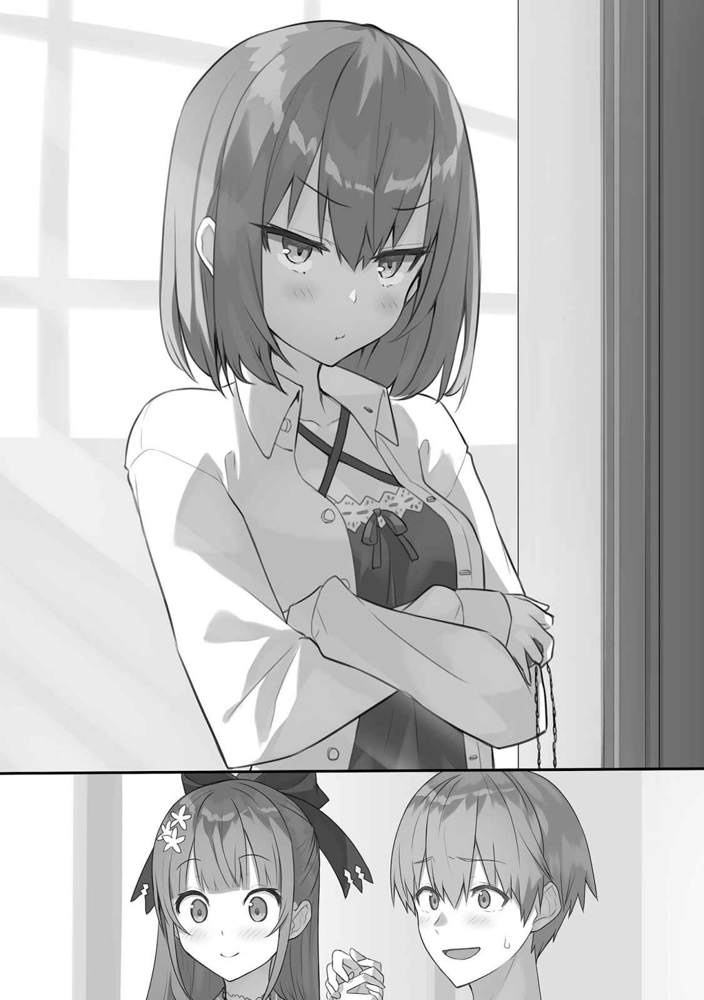
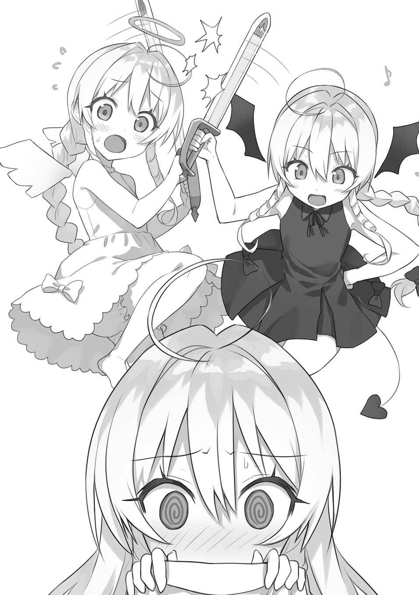
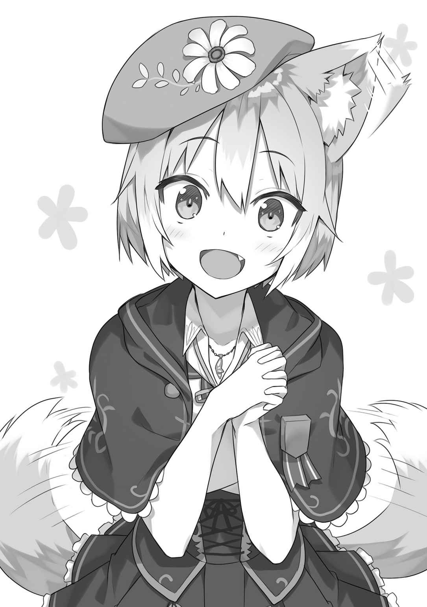

第１章
「う〜ん……上手くいかないな……」
ソファーに腰かけ、新しい魔法式を浮かべ実験していた僕は独白を零した。
──今、僕がいるのは東都最大の病院、その特別病室。
ベッド脇の椅子には魔剣『
オルグレン公爵家を
僕は
教え子達や妹、両親は半壊した新旧獣人街の復旧作業をお手伝いしていて不在。
膝の上では紫リボンを首に結んだ
開け放たれた窓からは心地よい夏の風。明るい声も聞こえてくる。
「僕も手伝いたいんだけど……」
「ダメですぅ〜♪ 『当分入院させて、強制的に休ませる！』が、全員の総意なので、アレンさんは、大人しくお休みするのが御仕事です☆」
扉の開いた入口へ視線を向けると、そこにいたのは、長く美しい
──この人の名前はリリー・リンスター。
リンスター公爵家メイド隊第三席にして、リンスター副公爵家の御嬢様。
僕の相方で、今は診察を受けているリディヤ・リンスターや、リディヤの妹で僕が家庭教師をしているリィネ・リンスターの
服装は、淡い紅を基調とした矢の紋様が重なっている大陸東方の衣装に、長いスカートと革ブーツ。似合ってはいるけれど、メイドさんには見えない。
リリーさんは病室へ入ってくるとベッド脇のテーブルに籠を置き、右手の人差し指を立て、注意してきた。
「いいですかぁ〜？ 私はアレンさんよりもお姉ちゃんです。そして、お姉ちゃんの言うことは聞かないとダメダメです♪」
「……初めて会った時、お姉ちゃんは迷子になって泣きべそをかいていたような？」
僕とリリーさんの出会いは今から五年前の夏。王立学校の生徒だった頃。
リディヤに南都へ招かれた僕は、駅で途方に暮れていた二つ年上の少女と出会い、一緒に冒険したのだ。髪留めもその記念に僕が贈った物だったりする。
なお……夕刻、満足して
劇的にリリーさんの表情が変化し、動揺しながら反論してくる。
「あ、あれは……私は、副公領にずっといたから南都に慣れていなくて……。う〜！ お姉ちゃんには優しくしないとダメなのに、もうっ」
唇を
──
「でも……
さっきまでの不機嫌は
「ふっふ〜ん♪ 当然です。目指すはメイド長ですっ！」
「頑張ってください──その前にメイド服を
「はぅっ！」
年上メイドさんは豊かな胸を両手で押さえ、上半身を倒した。面白い反応。
メイド隊の人達にも愛されているんだろうなぁ。メイド長のアンナさんには特に。
ほんわかしていると、リリーさんが、がばっと身体を起こしポカポカ腕を
「アレンさんはぁ！ ほんとにぃ!! 意地悪ですぅ〜 」
」
「痛い、痛いですって」
「……ふんだっ！」
腕組みをし、リリーさんはそっぽを向いた。変わられていないようで何より。
僕は右手の人差し指を倒し、さっき展開しておいた魔法式を
「わぁ〜
「『
「!?」
──リナリア・エーテルハート。
人類史上最高の剣士にして魔法士。そして……最後の魔女の
幼狐の頭を撫でながら、静かに告白する。右手薬指の指輪が赤く光った。
「僕は彼女と約束をしました。『アトラを守る』と。けれど……それを破ってしまった。この子が帰ってきてくれたのは、リディヤの中の大精霊『
「アレンさん……て〜ぃ」
「わっ！」
いきなりリリーさんが僕の腕を引いた。そのまま、頭を膝上に。
優しく優しく撫でられる。大人びた口調。
「──……大丈夫です。アレンさんは頑張りました。頑張り過ぎています。そのことはみんな知っています。だから、
アトラも起き、もぞもぞと僕のお
「…………心に留めておきます」
「──よろしいです。アトラちゃんも覚えておいてくださいね？」
可愛く一鳴き。尻尾をパタパタ。リリーさんはアトラと仲良しだ。
上半身を起こすと、年上メイドさんは文句。
「あ〜！」
「……女の子は簡単に膝枕をしてはいけません。リリー・リンスター公女殿下？」
「『公女殿下』禁止ですぅ〜！」
年上メイドさんが駄々をこねる。
──ああ、そうだ。
「リリーさん」
「……何ですか？ 意地悪な家庭教師さん」
「
「…………へぅ？」
大きな瞳をぱちくり。
「リィネから話を聞きました。僕がいない間、リディヤを支えてくれたんですよね？」
──僕の相方は『
けれど、心は年齢相応。強がっていても、
「
「──……アレンさん」
リリーさんが僕の両手を握ってくる。
「そんなの当たり前です。だって、私はリディヤちゃんが大好きですから。それに、私やリィネちゃんだけじゃありません。メイド隊や屋敷のみんな、奥様も見守っていました。何より──……アレンさんがいました」
「……僕は何も」
「いいえ！ リディヤちゃんは叛乱の報が届いた後、懐中時計とリボンを片時も離さず持っていました！ アレンさんはリディヤちゃんの心を守ったんですっ!!」
普段の様子と異なり、真剣そのもの。
──これが『リリー・リンスター公女殿下』本来の姿なのかもしれない。
視線を合わせ、穏やかに笑みを返す。
「……そうだと嬉しいですね。今、話したことは内緒で」
「……はい♪ 私とアレンさん、二人だけの秘密です☆」
「──……何を、しているのかしら？」
「「！」」
極寒の声が
そこにいたのは、僕の白シャツを羽織り、調子が悪い懐中時計を持った寝間着姿の瘦せている美少女。短くなった紅髪は未だ切り
──リディヤ・リンスター。
『剣姫』の称号を持ち、王国南方を
リディヤが
「…………手」
「え？ ……あ」
リリーさんと手を握りっ放しだったのを思い出し、慌てて離す。
「あ〜……」不満そうな声が
リディヤは冷たく年上メイドさんを
「……リリー、紅茶を
「はぁ〜い。……んしょ」
リリーさんは立ち上がり、少し考え──アトラと僕の頭を、ぽん。
「！ リリー!!」
「うふふ〜♪ では、行ってきま〜す」
嬉しそうに年上メイドさんは逃走していった。
残されたのは僕と膝上でうとうとなアトラ。そして、むくれているリディヤ。

……さて、どうやって言い訳しようかな？
「……この
「
「口答え禁止！」
頰を少しだけ膨らませ、紅髪の少女は僕の隣に腰かけ、肩と肩をぶつけてきた。
「まったく、あんたは私の、私だけの下僕だっていう──……」
リディヤが僕に顔を近づけ、匂いを嗅いだ。目を細める。
「……ねぇ？ どうして、リリーが使っている香水の香りがするの？」
「あ〜……隣に座って」「
断じられ言葉を
……こういう時、下手な言い訳が逆効果なことを僕は学んできた。
アトラに浮遊魔法をかけ、膝を空け、手でぽんぽん。
「この程度で埋め合わせが出来た、と思わないでよねぇ……御主人様が望むことをしたのは及第点だけど」
「あ、望んではいたんだ」
「はぁ!? 当たり前でしょうっ！」
「ええ……僕が怒られるの……？」
「自覚が足りないのよ。……ねー」
リディヤは再び視線で要求してきた。公女殿下の
くすんだ紅髪を手で
「診察、どうだった？」
「異常な〜し。退院はあんたと同時だけどね」
「……そっか」
『異常がない』。
それは『異常を見つけることが出来ず、原因不明』という意味。
──いや、原因を僕は知っている。
僕は、リディヤ、そして、この場にいないティナ・ハワードと魔力を
戦後、ティナには問題がなかったものの、無理を重ねた僕は心身の疲労で要療養。
そして、リディヤは……手を伸ばし頰に触れてきた。
「そんな顔しないで。大したことないわよ」
「……………」
僕はその手を無言で握り締める。
──現在、リディヤは著しい魔力減衰状態にある。
使えるのは僅かな身体強化のみ。魔力量は平均以下の僕よりも少ない。
医師の診察では、極度の魔力酷使による一時的な症状、ということだったけれど……。
診断後、一番動揺したのは本人──ではなく、ティナや、ティナの専属メイドであるエリー・ウォーカー。そしてリィネと、僕の妹のカレン。
僕やティナの姉であるステラ・ハワード公女殿下は、みんなの姿を見て平静を保てた。
人は他者の姿を見ることで冷静になれるものなのだ。
もしも、リディヤが魔法を使えないままなら──……軽く頰を摘ままれた。
「バカね。私、
「……その質問は反則だと思う」
「こーたーえーてーぇー」
リディヤが膝上で子供みたいに
アトラも起き、空中で
上半身を倒し
「──魔法が使えなくてもリディヤはリディヤだし、嫌いになんかならないよ」
「うふふ……よろしぃー♪ あ、でも、治癒魔法を使えないのは困るわね……」
「確かにね。君は前衛だし」「そーいうはなしじゃーなーい」
リディヤは起き上がり額をぶつけ目を閉じ、右手を両手で包み込んできた。
「あんたが
「それは君だってそうじゃないか」
「あんたと一緒なら、私はこの世界の誰にも負けないし、怪我することもない。私が魔法を使えないままでも、これは変えられない！ ──そうでしょう？」
「あ〜…………うん。そうだね」
「ふっふっふ〜♪」
少女は花が咲いたような満面の笑み。頰を
「退院したら、懐中時計を父さんに見て
「そうね〜。また、伸ばさなきゃ……
「いや、それは」「やってくれなきゃヤダ」
「我が儘な公女殿下だなぁ」「あんたにだけよ」
どうも不利だ。話題を変えねば。
「……そう言えば、南都へ届けてもらったリボン」
「あーあーあーあー！ ……い、いじわる、いうなぁ。あ、あんただって、私の
燃やし尽くしてしまった罪悪感はあるらしい。
アトラが僕達の膝の間に着地。丸くなった。
二人で
「──ティナ達と戦って正気に戻るまで、暴走したって聞いたけど、本当なのかい？」
「…………半分くらいはね。もう半分は」
リディヤが右手の甲を見せてきた。そこに大精霊『
アトラによると──深く深く眠っているらしい。
「女の子の、ね……必死な声が聞こえたのよ。『大丈夫。
「『炎麟』は君をずっと助けようと──」
「はい！ 難しい話はおしまーい。そういうのは、全部退院した後にしなさい！ ララノアの魔短銃と聖霊教の印も御母様へ渡したんでしょう？ なら、今のあんたが
指輪を
そんな少女のくすんだ紅髪を手で直しながら、僕は
教え子のティナとステラの母上、ローザ・ハワード様の呪殺疑惑の件は、
それぞれ八つの大精霊と大魔法。名前が判明した程度で詳細は不明。
けれど……膝上のアトラを見つめる。僕はこの子達と約束をした。『必ず助ける』と。
僕のことらしい『欠陥品の鍵』の件も多少前進したかな？
アトラを鎖に繫ぎリナリアと交戦したという、『賢者』とレフが叫んでいた『聖女』。
どちらも
叛乱劇の陰で聖霊教は、王都から魔獣『針海』の
だからこそ、レフは大精霊『石蛇』の力が自身に埋め込まれ、『針海』へ変異したことを心底疑問に思っていたのだ。
──もしかしたら、あれは僕だけに対する。いや、まさかな。
リディヤが指輪を弄るを
「……とれない。ねぇ？
「……駄目です」
「ケチ。バカ。……何処にも行かない？」
「行かないよ」
「……えへ♪」
幸せそうに、少女は僕へ身体を寄せてくる。
……『
リディヤが『悪魔』に
僕がいる限り二度目はないし、させやしないけど……情報は必要だ。
これ以外にも、ステラが遭遇したという骨竜や、使徒を名乗る存在。ララノアの関与、リナリアの日記
一歩一歩進むしかない。後で調査要望書をまとめておかないと。
でも今は──……窓の外から、遠くで何かが倒壊する音と強大な魔力。
ステラとカレンはともかく、ティナ達、ちゃんと復旧のお手伝い出来ているかな？
＊
「はい、これでもう大丈夫。痛くなくなったかしら？」
「うん！ 痛くない！ ありがとう、お姉ちゃん！」
足を負傷し歩けなかった猫族の少年は瞳を輝かせ、その場で跳びはねてみせた。
付き添っていた母親の目に涙が
──叛乱は幕を閉じたけれど、東都には
正規の病院だけでは到底足りず、大樹には
その
アレン様に知られたら『僕もそう呼んだ方が良いですか？』と言われそうだ。
あ……でも、お話の切っ掛けには出来るかも？
退院されたら、たくさんお話ししたいし……えっと、あ、甘えたいし…………。
「お姉ちゃん、お顔が真っ赤ー」
！ わ、私ったら、何を考えて。い、いけないわ。いけないことだわ。
「こほん。……魔法で
「はい、必ず」「ありがとう、お姉ちゃん！」
母親は子供と一緒に天幕を出て行った。私は小さく手を振って送り出す。
机の上の小さな時計を確認。終了時間だ。……ふぅ。
疲れを感じ身体を伸ばす。軍服に白衣を羽織るのにも、慣れてきた。
「……飲み物でも貰ってこようかしら」
ここ数日魔法を使うとよく舞う光の魔力を手で散らしながら、天幕の外へ。
後方には大樹が
どれも、木箱や人を満載。大樹前の広場も多くの人々が行き交っている。
各獣人族。エルフ族。ドワーフ族。人族の姿も多い。
種族関係なく話し合い、笑い合い、次々と復旧作業が行われる現場へ向かっている。
……北都でも、こういう光景が見られるようにしないと。
私はステラ・ハワード。公爵家を継ぐんだから！
脳裏に、成長し
「きゃっ」
「お疲れ様、ステラ。はい、果実水」
「！ カ、カレン。ありがとう、そっちも休憩？」
私にグラスを押し当ててきたのは、灰銀色の髪で獣耳と尻尾を持ち、王立学校の制服に白衣を羽織り、半妖精族の花付軍帽を
私の親友で、王立学校副生徒会長でもあるカレンだ。アレン様の義妹でもある。
今回の
ルブフェーラ公爵家を参陣させる、という大功を立てた。
「ええ。軽傷者は大方治療し終えたみたい。さっき、母さんもそう言ってたし」
「そ、そう……」
カレンとグラスを合わせ、一口。爽やかで
エリン様は、アレン様とカレンのお母様だ。
とてもとてもお優しい御方で、叛乱鎮圧後も大樹で珍しい増幅魔法を用いられて、治療行為の補助をされている。
……私も『お
「終わったら、兄さんの面会に行きたいわね。……ついでに、リディヤさんも」
「……そうね」
私の親友はエリン様とアレン様に似て優しい。
──現状、極一部を除いてアレン様とリディヤさんとの面会は許されていない。
御二人共、大変疲弊されている為だ。許可が出たら、みんな大挙して押しかけてしまう。
リディヤさんの魔力減衰も心配だし、ティナ達と計画した『アレン様の社会的地位を私達で引き上げる』は、一時的に棚上げ。
今は心と
叛乱劇における論功行賞の情報は、逐次集めておけばいい。
カレンが嘆息した。
「兄さんのことだから、退院後は来る人を拒もうとはしないわ。昨日の夜、届け物をしに行ったら、蒼翠グリフォンの親子が来ていたし……」
蒼翠グリフォンは恐るべき魔獣。
人には慣れないと学んだけど、アレン様ならば納得だ。
でも……私は親友を
「カレン、昨日の夜、病院へ行ったの？」
「──……私は妹だし？ 買い物帰りに頼まれていた本とノートを届けただけよ」
「……ふ〜ん。てっきり、甘えたくて行ったと思ったわ」
「そ、そんな
カレンが頰を染め、怒ってきた。
「ふふ、ごめんなさい」
それも全部全部──胸ポケットに忍ばせている、蒼翠グリフォンの羽根に触れる。
ロストレイの地で、『勇者』様から受けた奇襲を思い出してしまう。
『有名になんかなりたくありません。私がなりたいのは』
『あの人のお嫁さん？』
………………あぅ。
自分の体温が急上昇するのを感じ、グラスの果実水を一気に飲み干す。
カレンが顔を
「ステラ？ どうかしたの？」
「！ な、何でもないわ、大丈夫──ティナ達、ちゃんと仕事しているのかしら？」
「ああ、それならさっき聞いたわ。張り切っているみたいよ」
「？ 聞いたって、誰に──」
「はい♪ 私でございます☆」
私達の目の前に突如として現れたのは、
リサ・リンスター公爵夫人に付き従って、大樹内の会議に参加されている筈じゃ？
メイド長さんが、イヤリング型の通信宝珠を差し出してきた。
「ステラ
「あ、ありがとうございます」
受け取り耳に着け、妹に呼びかける。
「ティナ、ティナ、聞こえる？」
『？ 御姉様ですか？ ごめんなさい。今、少し取り込み中で──あ〜！ リィネっ！ エリーまで！ ま、まだ、開始じゃないですっ！ あ〜もうっ！！！！』
通信宝珠からは、リィネさんとエリーがはしゃぐ声と、近衛騎士達の太い笑い声。
瓦礫撤去で競争をしているようだ。
私はアレン様と魔力を
「……ティナ、はしゃぎ過ぎないようにね？」
『分かってますっ！ でも……これは絶対に負けられない戦いなんですっ!! だって、次の先生との面会時に、隣の席を──リィネ!? 『
私はカレンと顔を見合わせ、肩を
……妹の前向きさが少し羨ましい。
アンナさんが指を鳴らし、静音魔法を張り巡らせた。
「王都・東都間の鉄道及び通信網の復旧作業も順調に進んでいるようでございます。早ければ週明けにも一部部隊が東都に入るかと。主力は、ハワード、ルブフェーラ両公爵家。リンスター公爵家及び南方諸家は南都へと帰還する模様です。王都には退避していた王都貴族の軍が入るとの報が届いております」
三公爵家が王都を離れる？
少し違和感を覚えつつ、アンナさんへ尋ねる。
「北方の講和は進んでいましたが……南方の戦況と、東方の様子はどのような？」
──現在、王国は三方に直接的な敵を抱えている。
北方のユースティン帝国。南方の侯国連合。東方の聖霊騎士団。
ユースティンと侯国連合は直接的な侵略を試み、それぞれ撃退された。
聖霊騎士団は東都で獣人族の方々を殺害。アレン様とリディヤさん、リィネさんの兄上、近衛騎士団副長リチャード・リンスター
その後は東都から自国領へ撤退。
二百年前の魔王戦争において、大陸に武名を
アンナさんが困り顔になられた。
「教授の御力もあり、帝国との講和は
戦争には相手がいる。一度始めた戦争は、そう簡単に終わらない。
その
身体は弱いのに、誰よりも心が強い。きっと、限界を超えて頑張ってしまっている。
カレンがアンナさんに問いかけた。
「大樹内の会議の内容はどのような……？」
「東都の復興をどうするか、が主眼でございます。アレン様の処遇については『
「「…………」」
私達は視線を合わせ、拳を握り締める。
──アレン様の社会的立場は
狼族の養子で姓もなく……カレンの話では『獣人』とすら認められていない。
王立学校、大学校を次席で卒業され、数々の功績を挙げてもなお、分厚い『見えない壁』に
それを改革していたのがウェインライト王家であり、守旧派の貴族達は実績を積み上げていくアレン様のような真の実力者達の影に
でも──……
アレン様の社会的地位向上の下地は整っている、と言っていい。
……けど、あの御方はきっと、御自身のことよりも獣人族全体の地位向上を望まれる。
私はカレンを見つめた。
「……そんな顔で見ないでよ、ステラ。協力はするわよ。でも、想像以上に大変よ？ 兄さんは変なところで頑固なんだから。……あと、偉くならないなら、わ、私が有利だし……」
「む……」「うふふ♪ 青春でございますね☆」
私は細目になり、アンナさんはニコニコ顔。
話を続けようとする前に、通信宝珠からティナとエリー、リィネさんの切迫した声。
『御姉様！ お
『ス、ステラ御嬢様っ！ た、大変ですっ！』
『石化が一部残っていて少しずつ増殖しています。浄化しないと!!』
魔獣『針海』に埋め込まれていた大精霊『石蛇』の力。
『閃雷』で吹き飛ばされ、消滅したと思っていたけれど……。
私はカレン、アンナさんへ目配せ。二人共も
「ティナ、エリー、リィネさん、今からそっちへ向かうわ」
『『『はいっ』』』
……疲労感もあるけれど、浄化魔法の使い手は少ない。私が頑張らないと！
脱いだ白衣を近くの椅子にかけ、グラスをテーブルへ置く。
「アンナさん、カレン、行きましょう！」
＊
「それで──ステラが浄化をしたんですか？」
その日の午後。病院の内庭。
屋根付きベンチに腰かけながら、僕は目の前の教え子達へ質問した。
樹木の
リディヤはリリーさんとアトラを連れて再検査で、不在。
年上メイドさんが内庭へ張っていった不可視の結界を感じる。
薄く
立ち上がった前髪と手首に結ばれている蒼のリボンが揺れる。
「はいっ、先生！ その後、私達が魔法で一掃しましたっ！ 御姉様とカレンさんは、大樹へ報告しに行かれています」
赤髪に軍帽を
「はいっ、兄様！ ステラ様はとっても
ティナもリィネも『公女殿下』の敬称を受ける公爵家の御嬢様で、数ヶ月前から僕が家庭教師をしている子達だ。この
……ただ。僕はペンをノートに置き、薄蒼髪の少女へ
「ティナ……頑張り過ぎていませんか？」
北方戦線において天候予測という神業を見せ、戦勝に貢献した天才少女は挙動不審。
露骨に視線を
「そ、そんなこと、ありません。私はもっと、もーっとっ、頑張って──」
「兄様、首席様は頑張り過ぎだと思います」
リィネがお澄まし顔で口を挟んできた。
「!? リィネ！ う、裏切るんですかっ!?」
「真実をお伝えしているだけです。兄様に
「ぐぬぬぬ…………」
ティナは
後で、ステラやカレンへ伝えておかないと。
石廊を通り抜け、ブロンド髪でメイド服の少女がやって来た。紅茶のポットを載せた木製のトレイを手に持っている。
僕の教え子の一人で、北方の名門ウォーカー家の跡取り娘、ティナの
「ア、アレン先生、冷たいお紅茶を
見るからに浮き浮きした様子で近づいてくる。
──うん、既視感。この後の展開が予測出来るな。
エリーは
「きゃっ」「おっと」
案の定転びかけたので、トレイに浮遊魔法をかけ、メイドさんを受け止める。
「大丈夫ですか？」
「は、はひっ！ あ、ありがとうございます。……えへへ。アレン先生♪」
「「…………」」
エリーは幸せそうな笑みを
二人の公女殿下が、僕から天使を引き離す。
「ひゃぅ！」「……エリー？」「……今のはわざとですね？」
悲鳴に構わず、ティナとリィネが年上の親友へ詰め寄る。
「あぅあぅ。テ、ティナ御嬢様、リ、リィネ御嬢様、そ、そんなこと……」
「問答！」「無用です！」「きゃ〜！」
少女達の追いかけっこが開始された。元気だなぁ。
僕はほんわかしながら、浮かべておいたトレイをテーブルの上へ着地。
冷たい紅茶を四つのグラスに
使いこなせれば、飛躍的に威力は向上するだろう。
けど──実戦で使える気がまるでしない。自分で自分の手を
少しでも失敗すればすぐさま暴発する代物で、完全再現も程遠い。
リナリアは人類史の頂点。凡人がどうこう出来やしないのだ。
僕は、追いかけっこを
「ティナ、エリー、リィネ。座ってください。見せたいものがあります」
「「「は〜い♪」」」
三人は声を
そして、魔法式に気付くと目を輝かせる。
「先生」「綺麗です」「兄様？」
僕は三つのグラスを手渡しながら説明した。
「幸か不幸か……僕は魔法の神髄に触れました。まず、エリー」
「は、はひっ！」
天使なメイドさんはその場で立ち上がった。新しい魔法式を三人の前に浮かべる。
ティナとリィネが目を見開き、エリーは両手で自分の口を押さえ、
「ア、アレン先生、こ、これは、もしかして……」
「ええ」
僕は大きな満足感を覚えながら頷いた。
離れていた間も、きちんと課題をこなしてくれていたのだろう。
「本物の
「欠かさず繰り返しています」
「素晴らしい。なら訓練次第で使えるようになる
「そ、そんな……ア、アレン先生のお陰です……」
エリーが自分の頰に手をやり、恥ずかしがる。
僕は複雑そうな表情のティナとリィネに苦笑しながら、メイドさんへ質問。
「雷属性はまだ苦手ですか？」
「……はい。こ、怖くて……」
「エリー、カレンが怖いですか？」
メイドさんは一瞬きょとん。すぐに、首を何度も振った。
「い、いえ。カレン先生は怖くありません。とっても、とってもお優しいので。えと……もう一人のお姉ちゃんって、思っています…………」
「なら、雷魔法を使う時、カレンのことを考えてみてください。八属性を使えれば、僕のとっておきを教えられます」
「！ アレン先生のとっておき……が、頑張りましゅ！ あぅぅ……」
ここぞ、で
次に僕は赤髪の公女殿下の名前を呼んだ。
「リィネ」
「兄様。リィネも『
──『紅剣』とは『
リィネの兄である、
「……先生、私のノートに秘伝はありませんでしたけど？」
ティナが頰を膨らませているけれど、今は捨て置こう。
赤髪の公女殿下を
「……エリーもだけど、もっとゆっくり成長してくれて良いんだよ？」
「幾ら兄様の御言葉でも聞けません。ステラ様に比べれば遅いくらいです」
リィネはきっぱりと拒絶。……ここであの子の名前が出てくるのか。
ティナが複数のお茶菓子を小皿に取り分け、椅子に腰かけながら抗議してきた。
「……御姉様は二冊目の課題用ノートもせっせとこなされています。あと、私の課題が基礎的なものばかりなのは何でですかっ！ これは
「ティナに必要なのは、自分自身の魔力をもっと
「う〜……先生の意地悪……バカ……」
「あぅあぅ。テ、ティナ
薄蒼髪の公女殿下はお茶菓子をぱくつき始め、エリーがあわあわ。
本音なんだけどな。
リディヤを超える潜在魔力と圧倒的な知識量。そして──ひたむきさ。
ティナ・ハワード公女殿下は、間違いなく天才だ。
必要なのは、魔法を使えなかった時間を埋めることだけ。
僕は、未来の大魔法士様へ
「リィネ、次はどうしようか？」
「──双剣での『紅剣』を目指そう、と思っています」
リディヤから譲り受けた剣の
……ティナもそうだけど、女の子の成長は早過ぎるな。
「うん、
「
「野望？」
リィネは大言を吐く子じゃない。
当代『剣姫』でもある姉のリディヤ。大陸屈指の剣士である母のリサ様。
そして、大陸最高峰の魔法士で『
身内の存在から重圧を受けてきたせいか、『リンスター』にしては控えめだ。
──その子が『野望』という言葉を口にする、か。
赤髪の公女殿下は左手を自分の胸に押し当て、宣誓。
「私は、姉様の出来ることが全部出来るようになりたいんです。そうすれば、今回みたいなことが起きても……一人では難しいと思っています。でも、兄様の御力と──」
リィネはそこで口籠もり、ちらっとティナとエリーを見た。
「？ リィネ？？ 何かついていますか？」「？ ──あ」
薄蒼髪の公女殿下は自分の顔に触れ、ブロンドのメイドさんは得心した様子で手を合わせた。
──一人では難しくても、三人なら！ か。
大学校の後輩達を思い出す。あの子達も、みんなで成長していったっけ。
僕は左拳を突き出す。リィネも突き出してきたので、合わせる。
「そうだね。頑張ろうか。打倒、リディヤだ」
「──……はい、兄様♪」
ほんわかしていると、ティナが呻いた。
「むむむ……先生！ リィネ！ 二人だけで通じ合わないでくださいっ！」
赤髪公女殿下の瞳に
「違います。兄様とだけでなく、エリーとも私は通じ合っています」
「……なっ？ エ、エリー？」
「え、えーっと……」
親友兼幼馴染のメイドさんの様子にティナが涙目になり、僕へ助けを求めてきた。
「…………せんせぃ」
「「「──ぷっ」」」
僕達は一斉に吹き出す。その様子を見て、ティナはジタバタ。
「ど、どうして、みんなで笑うんですかっ！ 特に先生っ！ 笑い過ぎですっ！」
僕は居住まいを正し、重々しく答える。
「
「真面目に答えてくださいっ！ ……先生のバカ。もう、知りませんっ！」
腕組みをし、ティナはそっぽを向いてしまった。
エリー、リィネが僕と目を合わせてくる。……あ。
「──お茶が足りないみたいですね。エリー、リィネ、取ってきてくれますか？」
「は、はひっ」「分かりました、兄様」
二人が内庭から離れ、病院内に入るのを確認した後──僕は静音魔法を張り巡らせ、公女殿下へ尋ねた。
「ティナ、
「……問題ありません。リディヤさんの方が大変です」
公女殿下は、姿勢を戻し僕に視線を合わせた。純粋な憂い。
憎まれ口を叩いていても、ティナは優しい子で、リディヤを尊敬してもいるのだ。
「……原因はこの子と同じでしょうか？」
ティナが右手の甲を見せてきた。
──八大精霊の一柱『
「分かりません。ただ、『
手を伸ばし、ティナの右手首に結ばれた
「心を落ち着かせる魔法式を込めたんですが……必要なかったかもしれませんね。僕が想像している以上に、ティナ・ハワード公女殿下は強い子でした」
「…………強くなんか、ありません」
ティナは俯き、小さな身体を震わせた。拳を握り締め、本音を吐露する。
「『針海』を倒した夜に言いましたよね？ 私は無邪気に信じていただけです。先生を、私に『魔法』を与えてくださった魔法使いさんを。それは強さなんかじゃありません」
ティナが顔を上げた。瞳には涙が
「私は、王都で黒い翼を生やしたリディヤさんを見た時、絶対に止めなきゃ！ と思いました。けど…………同時に
「……ティナ」
少女の告白に、僕は名前を返すことしか出来ない。
公女殿下は蒼のリボンの結び目を
「──髪に結んでくださいますか？」
「……ええ」
リボンを受け取って、魔法で浄化し、ティナの前髪に編み込んでいく。
気分が高揚しているのか、美しい
結び終えると、ティナがはにかんだ。
「えへへ……
静かに、けれど、強い意志を込め、少女は僕の名前を呼んだ。
右手を両手で強く強く握り締められ、胸に押し付けられる。
まるで祈るかのように、ティナは僕へ告白した。
「──何回でも、何十回でも、何百回でも、何千回でも、何万回でも繰り返します。私、今まで以上にもっともっと頑張ります。そして必ず、アレンに
ティナの感情に反応し氷華が勢いを増した。内庭全体を包み込み、光彩が飛び交う。
──まったく、この子は本当に凄いな。
秘めた可能性に身震いしながらも、左手を振り、氷華を消す。
そして、天才少女の右手の甲を指で触れる。
「なら、次はその子を──『氷鶴』を感じ取ることを目標にしましょう。大精霊には意思があります。成長すれば
ティナが手を伸ばし、僕の袖を摘まんだ。
「……一緒に、ですよね？」
「勿論。みんなには内緒なんですが、ティナ用の魔法も試作しているんです」
「私の!? ──……先生♪」
「おっと」
ティナが胸の中に飛び込んできた。この子も甘えたかったのだろう。
僕も軽く抱きしめようとし──
「きゃぅ！」「はーい、そこまでです」「……ティナ御嬢様、ズルいです」
石柱の陰に隠れていた、リィネとエリーが飛び出してきて、ティナを僕から引き離した。
赤髪公女殿下が腕組みし文句。
「少し気を遣ってみれば……あと、私の名前が最後なのは納得出来ませんっ！」
ティナは
「ふっふーん。そんなの決まってます。リィネは『妹』枠だからですっ！ 先生のこと、名前で呼んだことないですよね？ エリーもっ!!」
「「っ!?」」
リィネとエリーが思わぬ反撃を
──うん。日常が戻ってきたな。
「うふふ〜アレンさん、愛されてますね〜☆」
「！ ……リリーさん、からかわないでください。リディヤはどうしたんですか？」
後ろから僕へ忍び寄っていたのは、リディヤに付き添っていた
「お紅茶のお代わりをリィネ御嬢様に頼まれたので、診察が終わった後に別れました〜♪ それとですねぇ──私も頑張りました！」
「？」
リリーさんはトレイに浮遊魔法をかけ、両手を合わせ、
「私も頑張りました！ お耳を★」
……嫌な予感がする。
同時に聞かないのも危険だ。意を決し、リリーさんへ耳を向ける。
「（父が最近
僕は即座に厳格な判決を下した。
「リリーさん、有罪です……」
「む〜！ 御嬢様方は甘やかすのに私は甘やかさないのは、ダメダメだと思います！」
「理屈が成り立ってませんっ！ アンナさんに報告しますっ！」
「!? アレンさんのいけず〜！」
「多数決です。僕の認識、間違っていませんよね？ ティナ、エリー、リィネ？」
「「「……はい」」」
じゃれ合っていたティナ達は声を合わせ、リリーさんの後ろへ回り込んだ。
「!? お、
「距離が」「近過ぎますっ！」「……リリー、何を耳打ちしていたのかしら？」
「……えへぇ。あ、私、お仕事、思い出しちゃいましたぁ〜★」
リリーさんが逃走を開始し、三人が追っていく。平和だなぁ。
「……騒がしいわね」
検査を受けていたリディヤが、アトラを抱えて戻ってきた。
相変わらず、寝間着に僕の白シャツ姿で、完全に気を抜いている。
年上メイドさんが浮遊魔法をかけていたトレイを丸テーブルへ下ろす。
「おかえり。どうだった？」
「なんのもんだいもなーし」
「アトラ、本当かい？」
リディヤが前へ回り込み、唇を
「……私の言葉を信じないの？」
「やせ我慢するのが、僕の知っているリディヤ・リンスター公女殿下だしね」
「その台詞、そっくりそのまま──」「？」
僕達は同時に上空へ目をこらす──何かが降りてくる。
リディヤは僕が思っていることを口にした。
「
「ステラとカレンだ。……何かあったのかな？」
アトラが僕の頰を前脚で押した。正解らしい。
リディヤが、リリーさんを追いかけていたティナ達へ鋭く指示する。
「あんた達！ 遊んでないで医者を呼んできなさいっ！ リリー、治癒魔法の準備！」
「「「！ はいっ!!」」」「了解ですぅ〜」
ティナ達は病院内へ飛び込み、リリーさんは治癒魔法を展開し始めた。
──姿がはっきりと見えてきた。
乗っているのは二人の少女。一人は白い軍服姿。ぐったりしている。
もう一人は王立学校の制服を着た、
烈風の中、僕は蒼翠グリフォンの手綱を握る少女の名前を大声で叫んだ。
「カレン！」
「兄さん！ ステラが、ステラが……!!」
＊
「ん…………」
目を開けると、私は大きなベッドに寝かされていた。
ベッド脇には
窓の外は夜の
──病院？
隣からは規則正しい寝息。
信じられないくらいに
私の足下では、幼狐のアトラちゃんが丸くなっている。
「え、っと……」
……私は、カレンやティナ達と『針海』が
静かにベッドから下りる。服も軍服から、白の寝間着に変わっていた。
「……誰かに着替えさせられた？」
独白し、魔力の灯りの下の手紙を手に取り確認。
──カレンの文字だ。
『ステラへ
お医者様の診断は過労ですって。要数日間の入院。
報告中に、いきなり倒れたから心臓が止まるかと思ったわ。
ティナ達の面倒は私とリンスターのメイドさんで見るから、ゆっくり休むように！
親友に頼られなくて不満なカレンより
追伸
着替えをさせたのは、私とエリーよ。
……兄さんじゃなくて、残念だった？』
「もう。カレンたら……」
どうやら、私は倒れてしまったらしい。
北方ロストレイで骨竜と戦い、王都へ転戦。落ち着く間もなく、戦略転移魔法で東都へ。
リディヤさんを止め、『針海』に挑み、戦後は東都の石化を浄化。
……思っていた以上に疲れが
手紙を丁寧に畳んでテーブルへ置く。
楽しい夢を見ているのか、寝ぼけて尻尾を動かしているアトラちゃんにくすり、としながら廊下へ。扉は開いていた。
起きたら少しでも早く、隣のアレン様の病室へ行けるようにされているのだろう。
外に大樹の影。水と虫の音も合わさり幻想的だ。
ふと、思ってしまった。
もしかして──アレン様の寝顔を見られるかも？
「…………」
窓枠に手を置き、頭をぶんぶん、振る。
ス、ステラ、な、何を、何を考えているの!?
そ、そんなことしていいわけが──……いい、わけが…………わけが………………。
──魔力を探ってみる。
ここ数日はリリーさんが常に詰めている筈だけれど、気配はない。
「………………」
私は意を決し、隣の病室へ。心の中の天使が必死に訴えてくる。
『だ、駄目っ！ 駄目よ、ステラ！ そんなことしたら、むぐっ！』
『今よ、ステラ！ アレン様の寝顔を見る好機は何度もないわっ！』
天使は悪魔に押さえつけられる。
……だって、だって、みたいんだもん。
アレン様の病室も扉が開いていた。そっと、中を
──……誰もいない。
ソファー近くの丸テーブル上には温かい光の
私は病室に入り、近くへ。棚の上に畳まれた洗濯物が視界を
「…………あ」
私はアレン様が普段着られている白シャツに目を奪われてしまう。
ふらふらと手を伸ばすと、再び、心中の天使と悪魔が言い争う。
『ステラ！ 早まらないでっ！』
『ステラ！ 今しかないわっ！』
──……悪魔の連勝。
私、絶対聖女になんてなれないわね。白シャツを手に取り、抱きかかえる。
「……えへへ」
たったそれだけのことで幸福に包まれてしまう。私は何て単純な女なんだろう。
そこで、更に悪いことを思いつく。
──カレンは王都でアレン様の下宿先に泊まる時、『妹の義務』で白シャツを寝間着にしている、と言っていた。
「え、あ……」
挙動不審気味に、キョロキョロ。だ、誰もいない、けど……で、でも……。
葛藤していると、三度心中の天使と悪魔が──
『『着てっ！』』
──……私は、そっと白シャツを羽織ってみた。

思っていたよりも…………ずっと大きい。
アレン様が異性であることを再認識し、頰が更に
「…………」
私は両袖を握り締め、顔を
「──ステラ？」
「！？！！！」
寝間着姿のアレン様が、トレイを持ったまま入口で
「え、あ、あの、そ、その…………こ、これを着ると、
本音を漏らしてしまい、私は頭を抱えた。
何て失態っ！
くすくす、という笑い声。顔を上げると、アレン様が近づいてきた。
「リディヤとカレンも同じことを言っていましたね。夜は冷えるので、上着代わりにしてください。……体調は大丈夫ですか？ 魔力が少し増えているみたいですけど」
「大丈夫──くしゅん」
窓から風が吹き、くしゃみをしてしまった。は、恥ずかしい……。
アレン様は何でもないように一言。
「丁度、温かいお茶を
「……はい」
私はもじもじしながらも素直にソファーへ。
簡易キッチンでお茶を淹れてくださっているアレン様の背中に、浮き立つものを感じながら、丸テーブル上に目を落とした。
『蒼翠グリフォン その生態について』『魔王戦争史』
分厚く古い専門書だ。視線を動かし、ノートを見やる。
そこに書かれていたのは、精緻極まるたくさんの魔法式だった。
「この御本とノートは……」
「ちょっとした調べ物です。ステラ、知っていましたか？ 蒼翠グリフォンって大樹付近にしか生息していないそうです。この指輪の持ち主に、僕とアトラはもう一度、会いに行かないといけないんですが……少し大変そうです」
アレン様が振り返られると、右手薬指の指輪が
──母様と同じ姓を持つ伝説の大英雄、リナリア・エーテルハートの物。
心をざわつかせていると、アレン様は丸テーブルの上を片付け、トレイを置かれた。
「ノートはみんなの新しい課題ですね。母さんとカレンには秘密にしておいてください。面会も極力、来ないようにしてもらっているのに、怒られてしまいますから」
「そんな……」
私だって今は休んでほしいと思っているのに……。
けど──
ティーポットからお茶をカップに
「活躍はティナとエリーから聞きました。
「そんな……私なんて……」
「それと──大変、御心配をおかけしました。もう、大丈夫ですから」
「……っ」
「おっと──ステラ？」
立ち上がり、アレン様の胸へ飛び込む。……温かい。この方は生きている。
「──……心配、しました」
声がみっともなく震えてしまう。蓋をしていた
「……東都からの一報が届いた時、一番取り乱してしまったのは私です。不安で、不安でしょうがなかった！
白いシャツが涙で
「──本当は、ユースティン帝国との戦いなんか構わず、すぐにでも東都へ……貴方を助けに行きたかった！ だけど──……分かっています。今の私じゃ…………貴方と一緒には戦えません。足手まといになるだけ…………結局、行かない、と決めました」
「…………ステラ」
顔を上げる。ティーポットやカップが魔法で浮かんでいた。
「でも……自分で行かない、と決めたのに……私、凄く嫌な子なんです。王国のこと、家のこと、ティナ達のこと……そういう大切にしてきたこと全部を投げ捨ててしまいたいって、何度も……何度も思ってしまいました。……ですが、だからこそ分かったんです」
涙を拭い、私の魔法使いさんを見つめ誓う。
「アレン様、次は私が貴方を守ります。そう──決めたんです！」
魔法使いさんは目をしばたたかせた。
「……困った生徒会長様ですね。けど、万が一そうなったらお願いします」
「はいっ！」
私は大きく
あ、今なら、甘えられるかも……。
アレン様が浮かべていたポットとカップを下ろしながら、小首を
「ステラ？ どうかしましたか？？」
意を決し、魔法使いさんの裾を摘まみ、上目遣いでおずおずと言葉を
「──……ア、アレン様、あの……わ、私、頑張りました」
「？ そうですね」
う〜……気づいてくれない。恨めしく思いながら、勇気を振り絞る。
「だ、だから……あ、あの…………ご、御
「御褒美ですか？ 具体的には？」
──脳裏に北都の駅で妄想した記憶。
『アレン様が私の執事になってくれたら？』
想いが口に出た。
「お、王都へ戻ったら、い、一日だけで
きっと今、私の頰は
ソーサーの上にカップを置きながら、アレン様が
「──……ステラ、もしかして、ティナ達に聞いたんですか？ 僕は、もう二度と執事服は着ない、と……」
袖を摘まみ、
「……ダメ、でしょうか……？」
「…………」
無言でソーサーごとカップが差し出されたので、受け取る……落ち着く花の香り。
紅茶を飲む穏やかな時間。心が弾む。
──アレン様がカップを置かれた。
「はぁ……その顔は反則でしょう。分かりました。他ならぬステラのお願いですしね」
「！ ほ、本当です、ぁ」「……声が大きいです」
手で口を塞がれる──
アレン様が手を離し、片目を
「──ステラ。そろそろ休んでください。じゃないと、聞き耳を立てている隣の部屋の公女殿下が
「え……？」
リディヤさん、起きて？ リリーさんも？？ 耳元で
「（ああ見えて、暴走の件ではステラ達に感謝しているんですよ）」
疑問が氷解。同時に……胸がチクリ、と痛んだ。
──アレン様とリディヤさんの間には強い
カップを丸テーブルに置き、
「ありがとうございました。アレン様も早くお休みになってくださいね？ じゃないと、みんなに言いつけちゃいますから」
「それは怖い。僕ももう寝ます──おやすみなさい、ステラ」
「おやすみなさい、アレン様」
リディヤさんの病室へ戻り、ベッドに潜り込む。廊下には人の気配。リリーさんだろう。
アトラちゃんが寝ぼけながら動き、私のブランケットの中へ。
──静寂が病室内を包み込む。
風がそよぐ中、背を向けたまま唐突にリディヤさんが口を開かれた。
「──……言っておくけど、あいつは今も昔も私のよ。他を当たりなさい」
淡々とした、同時に強い確信を持った口調。
事実……そうなのだろう。でも、それでも！
「──……分かっています。現状、あの御方の隣に立つ資格を持っているのはリディヤさんだけです。けど」
羽織ってきてしまった白シャツの裾を握り締める。
「想いを寄せるのは私の意志です。負けません」
リディヤさんが微かに動かれるのが分かった。……笑われた？
「……そ。無駄な努力だと思うけど、精々頑張んなさい」
「はい。頑張ります」
今度は分かる。──苦笑されている。
「……調子が狂うわね。そういう子だったかしら？ 考えてみれば、
「？」
身体を動かされ、背を向けられる。
「──……借りは返したから」
先程のアレン様の言葉を思い出す。あれで感謝しているんです。
だから、邪魔しなかった。リリーさんがいなかったのも……。
その間やきもきされていたのを想像してしまい──噴き出す。
「……ふふ」
「……何よ？」
低い声色。けど……全然怖くない。
私は寝返りを打ち、暗闇の中、
「リディヤさん、これからも仲良くしてくださいね。こ、恋敵、かもしれませんけど……私は
「…………考えとくわ」
リディヤさんが照れるのが分かり、私も今度こそ眠るべく目を閉じた。
＊
「それじゃ、カレン。私とリディヤさんは紅茶を
「仕事をしないよう、ちゃんと見張っておきなさい。アトラ、行くわよ」
「……分かりました」「♪」
病室から、アトラを抱えたリディヤとステラが出て行く。
二人共、寝間着に僕の白シャツを羽織っている。……返ってくるかなぁ。
二人の足音と話す声、アトラのはしゃぐ気配が遠ざかっていく中、朝から着替えを届けに来てくれた僕の妹──カレンは、
この後、ティナ達と市街地復旧作業に行くようで王立学校の制服姿。頭には半妖精族の花付軍帽を
「……兄さん、ステラに何を言ったんですか？ あと、どうしてシャツを？」
僕はゆっくりと視線を
ソファー近くの丸テーブルにはメモ紙やノート、封筒とペンが散乱している。
「昨日の夜、少し話したくらいだよ？ シャツは返してくれなくてさ」
「……う〜」
カレンが不満気に
窓の外からは初夏の心地よい風。
妹の静かな要求。
「……兄さん、立ってください」
「うん？」
立ち上がると、カレンは後ろに回り込み──
「え？」
僕が普段着ている、魔法士のローブを被せてきた。
……ボロボロだったのに、
カレンは背中に頭をコツン。
「母さんと一緒に直しました。良かった……ぴったりです」
「……そっか」
二人共、昼間は東都復旧作業を手伝っていて、忙しい
妹が頭を押し付け、裾を握り締めながら甘えてくる。
「…………リディヤさんも、ステラもズルいです。私だって……私だって、兄さんとたくさんお話ししたいのに。兄さんは私の兄さんなんですよ……？」
「カレン」
振り返って、妹を優しく抱きしめる。
子供の頃と変わらない大きな瞳を
「大丈夫だよ。今はバタバタしているけど、落ち着いたらたくさん話そう」
「……兄さんは、そう言って、
そう言いながら、カレンは胸に顔を
花付軍帽から覗く獣耳と尻尾が
「そう言えば、カレン、制帽は見つかりそうにないのかい？」
「はい……この帽子はチセ・グレンビシー様にいただきました」
半妖精族の長にして、大英雄『流星』を支えた四人の分隊長の一人で、『花賢』の称号を持つ大魔法士に、か。僕の妹は
ただ、制帽がないのも困るかもしれない。なんとはなしに提案する。
「なら──僕が使っていたのを渡しておこうか？」
「！ 兄さんのを、ですか？」
カレンの瞳が輝き、獣耳と尻尾の動きが激しくなった。
「王都へ帰ったら渡すよ。まだ綺麗だったし──……新しい物の方が良いなら」
「いります！ ……座ってください」
促されソファーに座る。カレンもすぐさま隣に。
頭を肩にこてんと、ぶつけながら早口。
「そ、そういうことなら、兄さんの制帽は、妹の私が責任を持って引き取ります」
機嫌が直ったようで何より。幾分真面目な口調で現状を教えてくれる。
「東都の復興は確実に進んでいます。石化していた場所は、ステラや学校長のお陰で全部浄化されましたし、
「人族が？ そっか……」
──二度と僕達の
「王都にいる三大公爵家は、王都・東都間の鉄道と通信網復旧を急いでいるそうです……リディヤさんが破壊しました」
「……うん、リリーさんに教えてもらったよ。リサさんは？」
『悪魔』へと
それでいて、死者は
「リサさんはうちに

カレンの声に怒りが交じり、紫電が飛ぶ。
頭をぽん。魔力が落ち着いてゆく。
「──……あと、『
「？ ギルに返したんじゃ？」
──魔斧槍『深紫』。
オルグレン公爵家が代々受け継いできた、強大な雷を秘めた武具。
リディヤの暴走を止めた後、崩壊していた公爵家の
僕とリディヤの大学校の後輩で、オルグレン公爵家四男のギル・オルグレンへ返却するよう言っておいたのだけれど……。
「受け取ってもらえませんでした。今はリサさんにお預けしています。短剣も同様です」
「……あの頑固者めっ！」
どうせ、僕と敵対したことを気に病んでいるのだろう。
……退院したら、話をしに行かないと。あいつは真面目過ぎる。
僕が決意を固めていると、カレンはテーブル上の手紙に興味を示した。
「フェリシア宛、ですか？」
「うん。あの子は南都で大分、無理をしているみたいなんだ」
──フェリシア・フォス。
ステラ、カレンの親友で人見知りな眼鏡をかけた女の子。
リンスター、ハワード両公爵家合同商社──通称『アレン商会』において番頭を務めてくれている才女。
商会に入る
……僕が『一緒に仕事をしませんか？』なんて言わなければ。
妹に手を握り締められる。
「兄さん、そんな顔をしないでください」
「……カレン、けど」
「フェリシアは強い子です。そして──兄さんのせいで巻き込まれた、なんて考えてもいません。『私は自分が今出来ることを全力でする！』と思って、行動しているだけです。……無理無茶しているのは、間違いありませんが」
僕は額と額を合わせる。
「ありがとう、カレン。僕の妹さんは世界で一番優しいね」
「当然です。私は、世界で
「「──ふふ」」
二人して笑い合う。僕等は背も伸び、魔法もたくさん使えるようになったかもしれない。
でも──昔と変わらず、僕等
そのことが、それだけのことがとても嬉しい。
カレンも同じ
僕の手を握り締め、自分の頭へ持っていく。
「さ、手は
＊
親愛なるフェリシアへ
天鷹商会のグリフォン便が一部復旧して、ようやく手紙を書いています。
僕もカレンもみんなも元気です（ステラも東都にいます。ティナは元気過ぎるかも）。
今、
『アレンさん、ちゃんと説明をしてくださいっ！』
……よくよく分かります。
けれど、僕も入院中で全容を
今、隣で紅茶を飲んでいるカレンとステラ
『兄さんは全力で休まないとダメです』『アレン様は心と
王立学校の生徒会長様と副生徒会長様にそう言われてしまえば、是非もありません（加えて、傍若無人な『剣姫』様にも
──本題です。
僕は事が収まり次第、早い内に南都へ向かおうと思っています。
それまで無理無茶をしないようにしてください。
体調を優先すること。きちんと食べて寝ること。ベッドに資料や本を持ち込まないこと。
商会に入る際の『約束』、覚えていますね？
最後に感謝を。
フェリシア、貴女が南都でリンスター及び南方諸家の
貴女の懸命な仕事が東都の獣人族を、僕の『家族』を救ってくれたんです。
ありがとう──僕は貴女のしてくれたことを決して忘れない。
何時か必ずこの恩は返します。
二人の公女殿下と妹に手紙を見せるよう迫られているアレンより
追伸
隠れて仕事をしようとしても無駄です。
リンスターのメイド長であるアンナさんに、エマさんへの伝言を頼んでおきました。
──断片的な情報を聞く限り、侯国連合の動きには一貫性がありません。
内部の意見が割れているのでしょう。
なので……難しいことは偉い人達に任せてしまってください。
自分の仕事に専心を！ 南都で会いましょう。